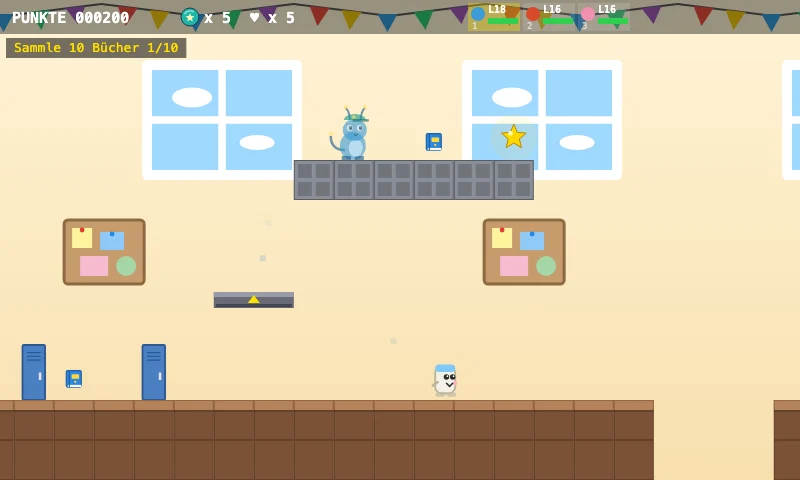
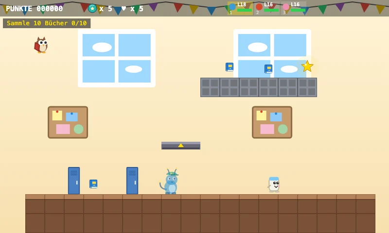
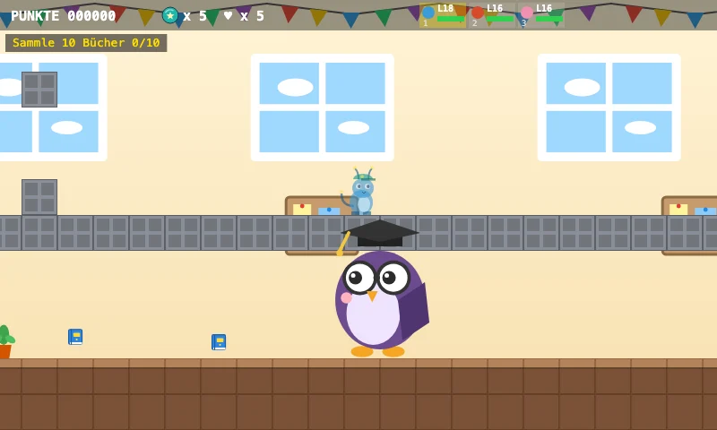
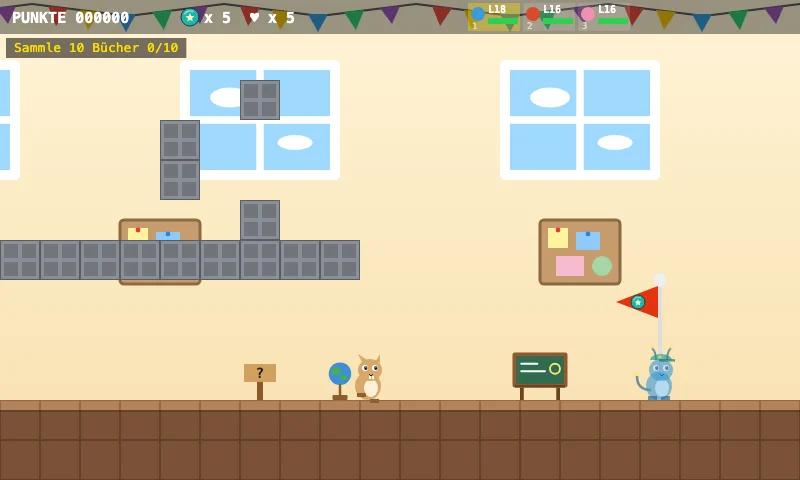

Aventura Zappilon
Escuela Zappilon
¡Bienvenido a la Escuela Zappilon!
Reúne 10 libros y se abrirá la sala de profesores.
El ascensor del pasillo te lleva arriba.
¡En el gimnasio, el trampolín te lanza muy alto!
Cinco vistas del nivel

El mundo
¡Bienvenido a la Escuela Zappilon!

Objetivo
Reúne 10 libros

Detalle especial
El ascensor del pasillo te lleva arriba.

Jefe
El sabio Profebúho — ¡Los ataques eléctricos son muy eficaces contra Zappilon volador!

Tramo final
¡Sala de profesores! ¿Tienes suficientes libros?
Descubre secretos, supera desafíos y encuentra el camino hacia la meta.